Dims: embedding size × vocab size (number of tokens)
Dims: WE:12,288×50,257
But embeddings produced from WE will not encode info from embeddings of other tokens in the context, which is why we use
Overall steps in a single head of attention?
Notes:
i indexes key vectors and value vectors
j indexes query vectors
In below algorithm dimensions and operations within expressions are in "reverse order" compared to code implementation
This is so it's mathematically intuitive, examples:
Matrix x Vector is a linear combination of column vectors of Matrix
Matrix x Vector is a projection into higher/lower dimensional space
Compute Softmax: First transform each embedding into a query vector and a key vector to calculate the attention weight between all pairs of embeddings in the context
Qj=WQ⋅Ej Calculate query vector for each embedding Ej in the context
(128×1)=(128×12,288)×(12,2888×1)
Ki=WK⋅Ei Calculate key vector for each embedding Ej in the context
(128×1)=(128×12,288)×(12,2888×1)
Sij=QjT⋅Ki Calculate attention score between each pair of embeddings Ei and Ej in the context (the matrix S is the attention pattern)
To prevent future tokens from attending to past tokens, we mask the attention pattern s.t. j≤i and when j>i, we set the attention score to −∞, this causes the softmax to output 0
(1×1)=(1×128)×(128×1)
But this is repeteated for all i and j in the context window (or sequence length)
QTK:(SEQ_LEN×SEQ_LEN)
P=softmax(dkQTK) Apply softmax to each attention score to get the attention weights. This is done for each query vector Qj and all key vectors Ki in the context
P=softmax(S)
Take linear combination (weighted sum) of value vectors to replace query embedding, Ej→Ej′
Vi=WV⋅Ei Given an embedding Ej, calculate the value vector for each key vector Ki in the context
(12,288×1)=(12,288×12,288)×(12,288×1)
But in practice we use a low rank transformation to reduce the number of parameters:
Vi=V↑⋅V↓⋅Ei
In literature, Vi=WO⋅WV⋅Ei
(12,288×1)=((12,288×128)×(128×12,288))×(12,288×1)
Update the embedding Ej with the weighted sum or linear combination of all value vectors Vi in the context for a given query indexed by j
Ej′=VP∗j
(12,288×1)=(12,288×SEQ_LEN)×(SEQ_LEN×1)
Can be thought of taking a weighted sum of column vectors in V with weights from a column of P at index j pertaining to a query at index j
Query vector: asks a question to the embedding vector
maps the embedding to a 128 dimensional space that encodes a question (with both position and token info)
Ex: "Are there adjectives in preceding positions?"
Qi=WQ⋅Ei
Wq:128×12,288 - Query matrix
Ei:12,288×1 - Embedding vector
Qi:128×1 - Query vector
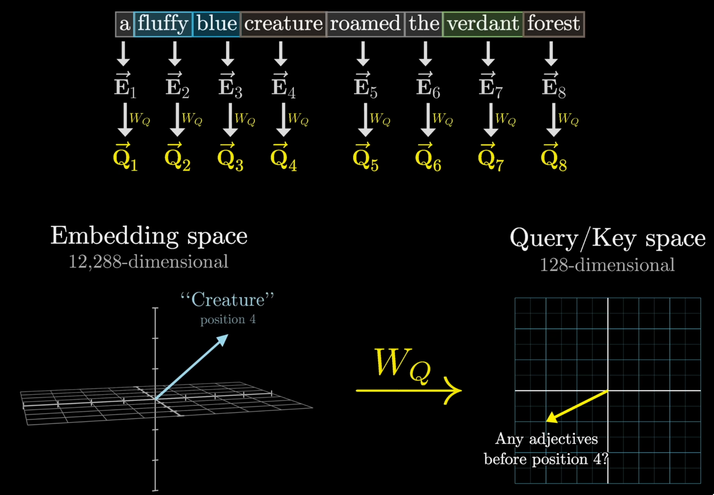
What is a key vector in attention?
Key vector: answers the question asked by the query vector
maps the embedding to a 128 dimensional space that encodes an answer (with both position and token info)
Ex: "I'm an adjective!"
Ki=WK⋅Ei
WK:128×12,288 - Key matrix
Ei:12,288×1 - Embedding vector
Ki:128×1 - Key vector
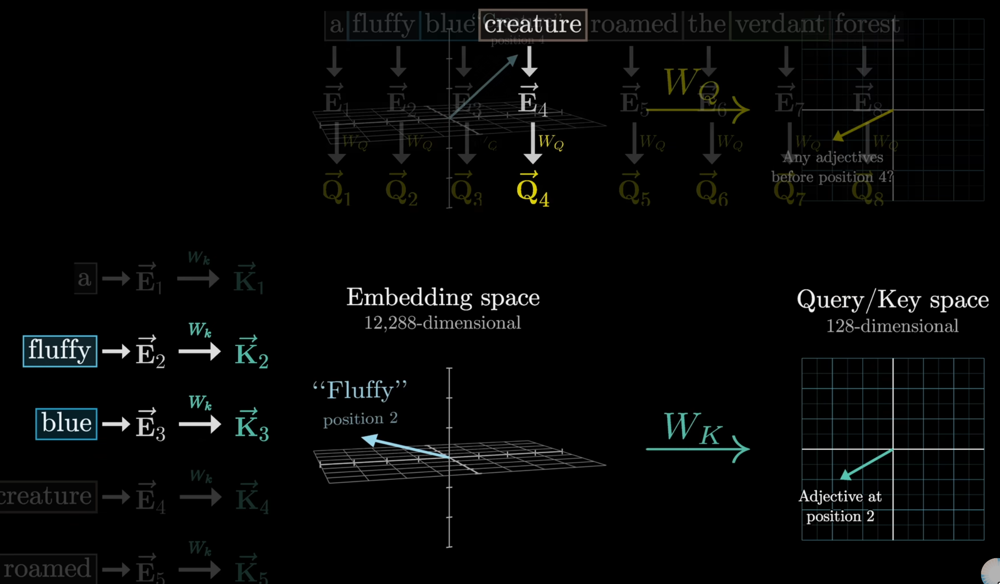
How are query and key vectors used in attention?
For a given query vector of an embedding, which token's key vectors attend to the token's query vector?
The dot product of the query and key vectors is used to calculate the attention score
Dot product tells how how similar are the query and key vectors
Does the key answer the question asked by the query?
Both the key and query vector are in the same 128-dimensional space
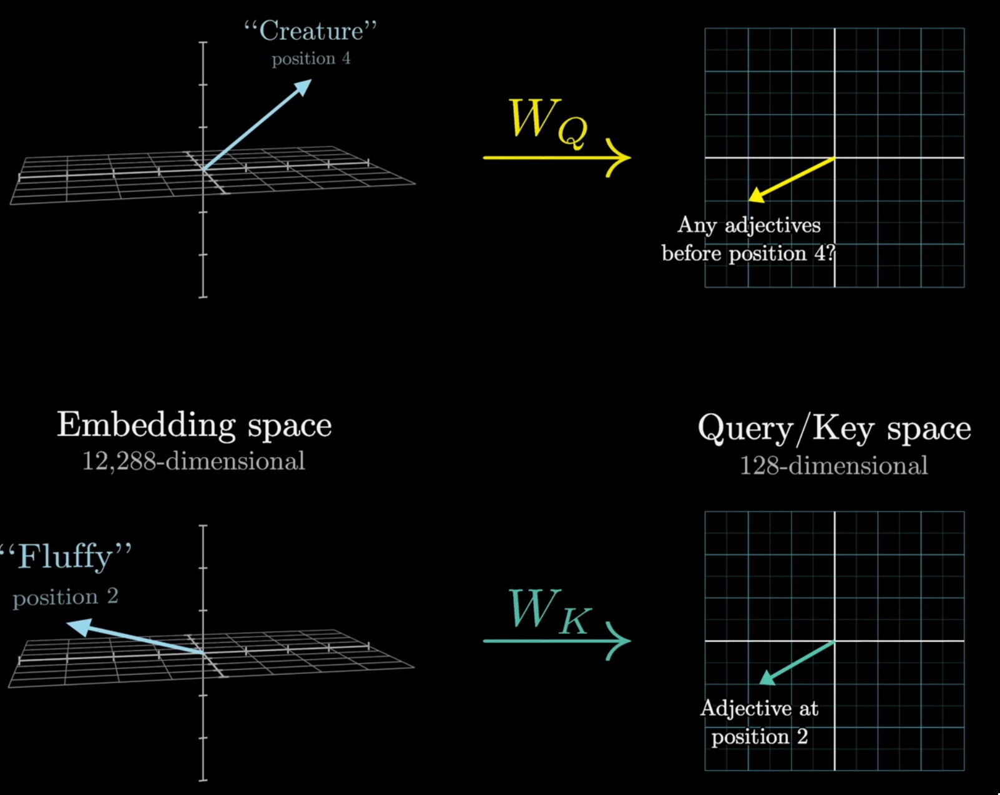
Compute dot product of each key-query pair
If dot product is high, then key vector "attends to" the query vector -> large positive number
This implies that in 128 dim space, key and query vector point in the same direction as shown in above image
What is the attention pattern?
Tells us how much each token should "attend to" each other token in the context (s.t. future tokens don't attend to past tokens)
Let's say we have context size N, so we have N tokens, and N embeddings Ei for each token
For each token Ei, we calculate a query vector Qi and a key vector Ki
We calculate the attention score Sij between each pair of embeddings Ei and Ej in the context (Cartesian product)
The attention score Sij tells us how much token Ej should "attend to" token Ei
The attention pattern is a matrix of attention scores Sij for all pairs of embeddings Ei and Ej in the context
The step by step math formulas above are: Qj=WQ⋅Ei Ki=WK⋅Ej Sij=Qj⋅Ki
What are attention weights?
softmax(dkQKT) to get the attention weights Wij
Divide by dk to stabilize gradients
dk is the dimension of the key vector
Doesn't change the attention pattern, just scales the attention weights
We apply softmax to the attention scores to get the attention weights
Attention weights tell us how much each token should "attend to" each other token in the context
Attention weights are a discrete probability distribution that sum to 1
Attention score vs attention weights?
Attention scores are the logits we pass into softmax
Attention weights are the outputs of the softmax
When computing attentions weights, across which dim do we apply softmax?
For a given query vector of an embedding, whick token's key vectors attend to the token's query vector?
For each query vector Qj, we calculate the softmax across all dot products with all key vectors Ki
Column-wise in below image
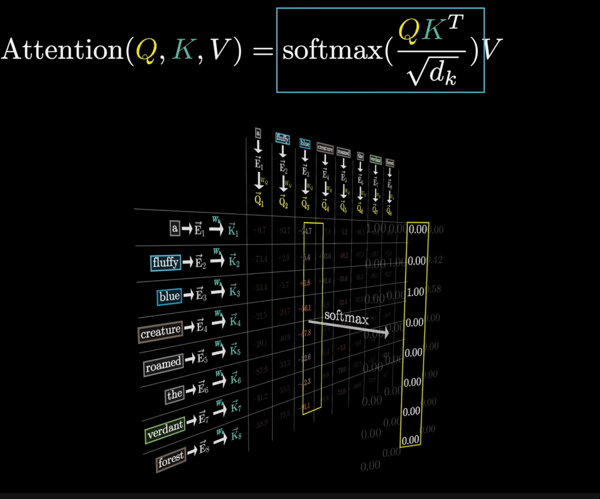
Why do we mask the attention pattern?
Prevents the model's future tokens to attend to past tokens
Current token should only be influenced by past tokens
The below red square entries in the attention pattern are future tokens relative to the column's token
These should be masked out
How do we mask the attention pattern?
To prevent model from attending to future tokens, we set the attention score to −∞ for future tokens
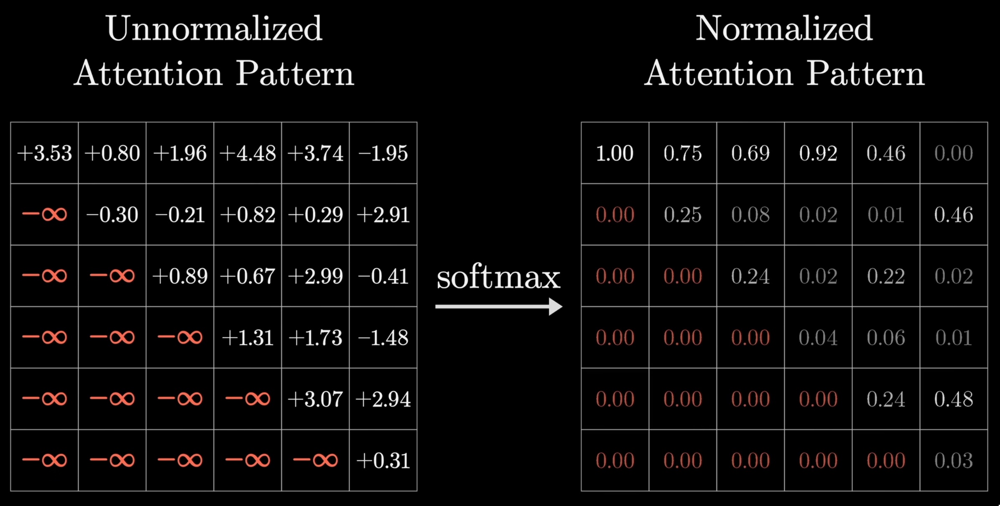
What is causal masking?
In literature:
We apply a causal mask to the attention matrix S (i.e., any entry Si,j with j > i is set to −∞).
In 3blue1brown videos:
We apply a causal mask to the attention matrix S (i.e., any entry Sj,i with i > j is set to −∞).
What is the size of the attention pattern?
N2: Square of the context size N
Attention pattern is a matrix of attention scores Sij for all pairs of embeddings Ei and Ej in the context
What is the value vector?
Attention pattern gives us which tokens attend to which other tokens
Now we need to update embeddings so tokens pass info to other tokens
"fluffly creature"
"creature" embedding should be updated to include info from "fluffy"
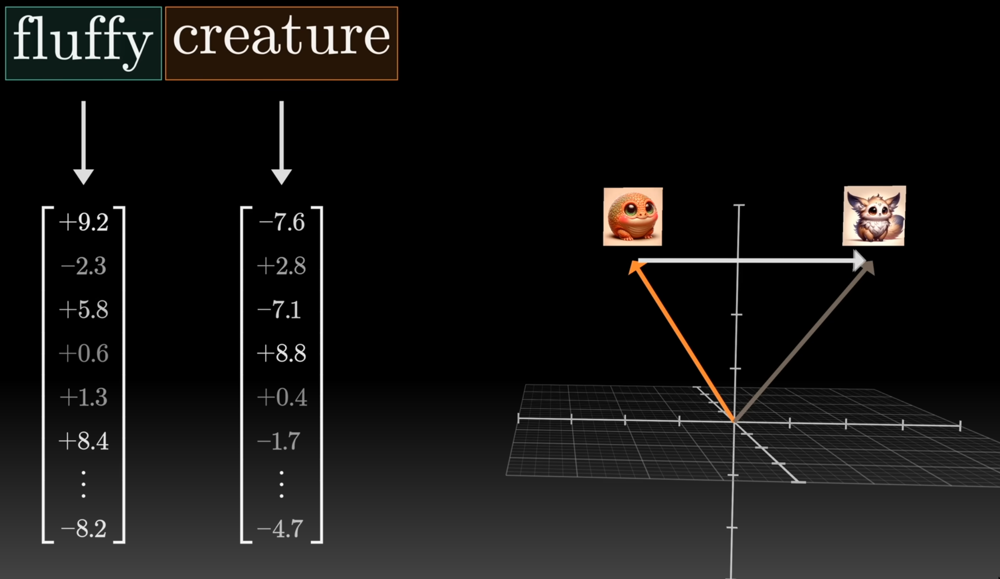
Value vector: direction vector that updates an embedding to incorporate info from other embeddings
Wv is a function that given an embedding, returns a value vector that is used as a translation to incorporate info from the passed in embedding
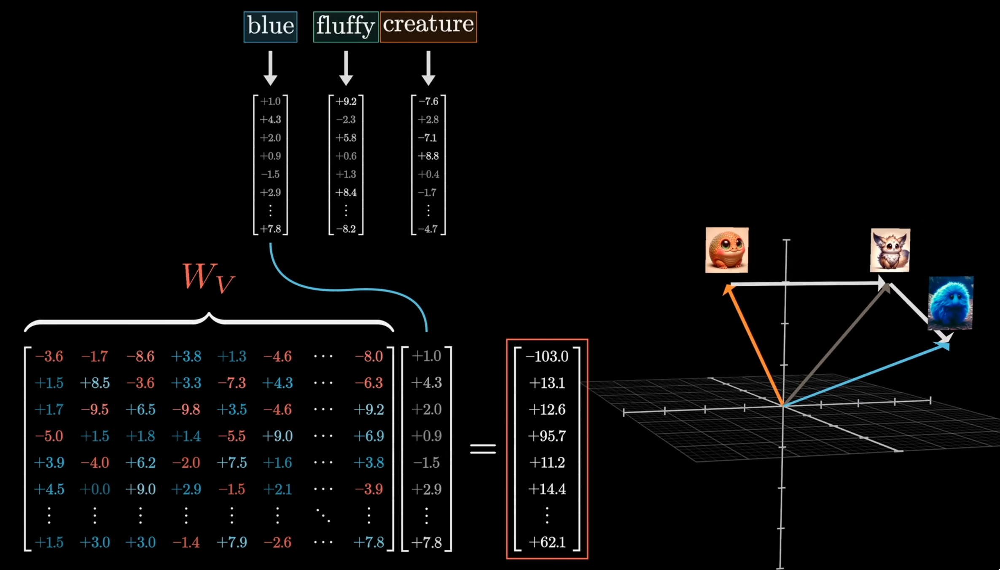
Query, key, vs value vectors?
Query vector: asks a question to the embedding vector
Key vector: answers the question asked by the query vector
Value vector: direction vector that updates an embedding to incorporate info from other embeddings
Softmax of query and keys give us attention weights which tell us how important the embedding pairs are (or how similar the key-query vectors are since we're using dot product), while the value vector tells us how to update the embedding in the direction of the key vector's embedding
softmax(dkQKT)∈[0,1]
Returns a weight
We're multiplying the weight with our direction vector or the value vector
Attention: softmax(dkQKT)⋅V
How to use the value vector to update the embedding?
We are asking this question: For a given query vector of an embedding, whick token's key vectors attend to the token's query vector?
This question is answered by computing all the attention weights for the query vector given all the key vectors
Value vector is computed for key vector's embedding
We multiply the attention weights with the value vectors to get the influence of each key vector's embedding on the query vector's embedding
Value vector tells us the direction in which to update the embedding
Since the attention weight ∈[0,1], it tells us how much to update the embedding in that direction
Qj=WQ⋅Ei Ki=WK⋅Ej Qj⋅Ki is the attention score P=softmax(dkQKT), is the attention weight
Vi=WV⋅Ej Ej′=∑iPij⋅Vi
Ej→Ej′ with the update
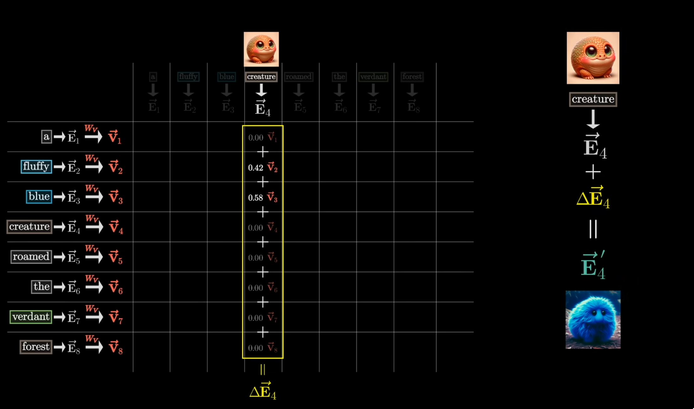
Then we repeat this for all embeddings in the context:
Why and how can WV be decomposed into smaller matrices?
WV:12,288×12,288
Input: Embedding vector
Output: Embedding vector
But this is too large, so a low rank transformation is used
What are the dimensions of the below parameters for attention?
The size of an embedding is 12,288 (in GPT3)
WQ
WK
WV
Think of each of these matrices as functions and they're inputs and ouptuts are.
WQ:128×12,288
Input: Embedding vector
Output: Query vector
WK:128×12,288
Input: Embedding vector
Output: Value vector
WV:(12,288×128)⋅(128×12,288)
Input: Embedding vector
Output: Embedding vector
What is cross attention? And how is it different from self attention?
Cross attention is used to translate between different texts or modalities: L1→L2
Cross attention is almost exactly the same as self attention
The key and query maps WK and WQ act on different datasets
WQ used on embeddings from tokens from L1
WK used on embeddings from tokens from L2
And no masking is needed since there's no notion of later tokens affecting earlier ones
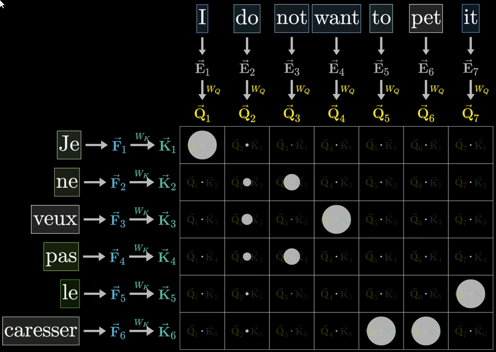
L1 is English
L2 is French
For a single head of attention, we have a set of the below parameters.
WQ, WK, WV
WQ, WK is used to capture a single type of attention pattern
WV is used to update embeddings
For example, these parameters have captured the semantic meanings of:
"Harry Potter is a wizard"
How can we make it capture the semantic meanings of:
"Prince Harry is a royal"
We have multiple sets of WQ, WK, WV parameters (multiple heads of attention) to capture different types of attention patterns.
⟹ Multi-head attention
GPT3 uses 96 heads of attention
96 sets of WQ, WK, WV parameters
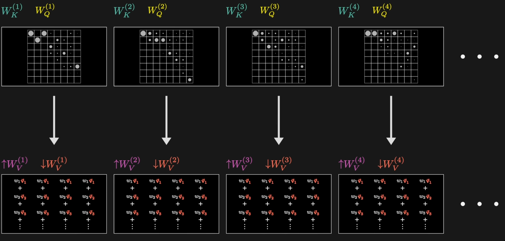
How does multi-head attention work?
Each head of attention captures a different type of attention pattern
For a given embedding Ei, each head of attention gives us a ΔEi
We do this for all heads of attention: ΔEi(1),ΔEi(2),…,ΔEi(96)
Ei′=Ei+∑hΔEi(h)
Then we update our embedding Ei with the sum of all the ΔEi from all heads of attention
Then we do this for all embeddings in the context
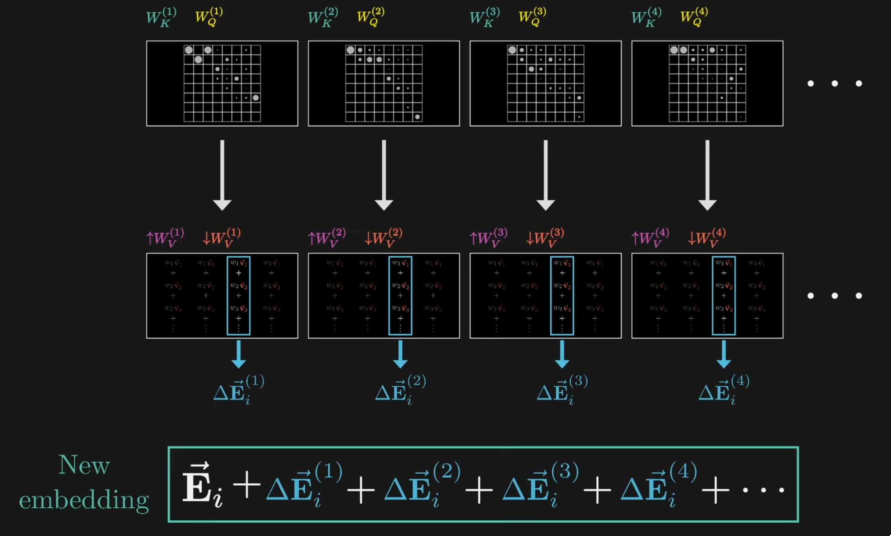
In literature, how is the value matrix represented?
Note: WV=V↑⋅V↓
V↓:128×12,288
V↑:12,288×128
We project into a 128 dim space (same space as query and key vectors) and then back to embedding space
But we don't use WV
Each head consists of WQ, WK, and V↓
Remember: V↓ projects embedding vector down into a 128 dim space
Output matrix consists of V↑ across several heads
Remember: V↑ projects 128 dim vector up into the embedding space
Dims: 12,288×96×128
Output: 12,288 in embedding space
Input: 96×128
For each head of attention as shown in diagram below
Output matrix is a 3D tensor
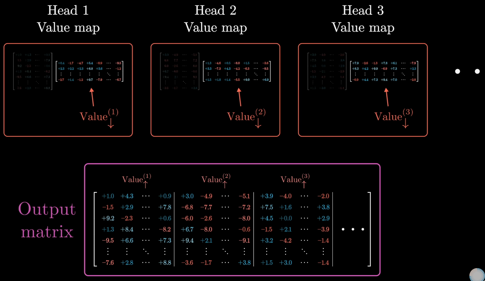
In literature:
Compute attention weights (as before)
For position j, for each head of attention, compute ∑iV↓⋅Ei
For all positions i (for the partial value vector that projects down into 128 dim space)
Returns a 128 dim vector
For position j, concatenate row-wise ∑iV↓⋅Ei across all 96 heads
96 comes from GPT3 design
Returns a 96×128 matrix
Using output matrix: Output Matrix⋅(∑iV↓⋅Ei)
(12,288×96×128)⋅(96×128×1)=(12,288×1)
Ultimately, we pass in a single embedding, and our output is the single but updated embedding
How many parameters are there in multi-head attention in GPT3?
Think of the dims of the matrices for:
Key
Query
Value
Output
Key: dquery⋅dembed⋅nheads⋅nlayers
128⋅12,288⋅96⋅96=14,495,514,624
Query: dquery⋅dembed⋅nheads⋅nlayers
128⋅12,288⋅96⋅96=14,495,514,624
Value: dvalue⋅dembed⋅nheads⋅nlayers
128⋅12,288⋅96⋅96=14,495,514,624
Output: dembed⋅dvalue⋅nheads⋅nlayers
12,288⋅128⋅96⋅96=14,495,514,624
Total parameters in multi-head attention: 14,495,514,624⋅4=57,982,058,496
How did we choose 128 as the dimension for the query, key, and value vectors?
It's because it's the embedding size / number of heads in multi-head attention
Why we use Vi instead of Ei in the self-attention mechanism?
After we compute attention: Wij=softmax(dkQKT)
Given an embedding Ej, calculate the value vector Vi=WV⋅Ei
Ej′=∑iWij⋅Vi to update the embedding Ej with the weighted sum of all value vectors Vi in the context
I don't understand why we don't just do:
Ej′=∑iWij⋅Ei
instead of Ej′=∑iWij⋅Vi
Ei and Vi are the same dims, doesn't it effectively do the same thing?
The key idea of using value vectors (Vi) instead of directly using Ei in the attention mechanism lies in adding flexibility and expressiveness to the model. Let me break it down:
Why use Vi instead of Ei?
Learned Transformations:
The value vector Vi=WV⋅Ei is a learned transformation of the original embedding Ei. The weight matrix WV allows the model to decide what specific information from Ei should be shared with other embeddings in the context.
In essence, WV enables the model to project Ei into a space that is more useful for updating the other embeddings Ej.
Separation of Concerns:
The embeddings Ei are initially transformed into queries (Qj) and keys (Ki) to compute attention weights, which measure how much Ei contributes to updating Ej.
The value vectors Vi, on the other hand, determine what information from Ei is actually shared with Ej. This separation of "importance" (attention weights) and "content" (value vectors) improves the model's ability to learn meaningful representations.
Dimensional Flexibility:
While Ei and Vi often have the same dimensions in practice, they don’t have to. By using WV, the model can project the embedding into a different dimension if needed, allowing for more flexibility in the design.
Better Generalization:
Directly using Ei would limit the model’s capacity to learn nuanced relationships. By introducing Vi, the model has an additional degree of freedom to specialize the information being propagated.
Why Not Directly Use Ei?
If you directly used Ei in place of Vi:
Ei carries all the information in the original embedding, without any filtering or transformation specific to the attention computation.
The model might struggle to learn effectively since Ei includes both useful and irrelevant features for updating Ej. By transforming Ei into Vi, the model can emphasize or suppress specific parts of Ei based on what is most relevant.
Intuition Behind Vi:
Think of Ei as raw information, and Vi as the "useful summary" of that information tailored to the current task. The attention weight determines how much of this summary Vi contributes to updating Ej.
If we just used Ei, we’d be treating all parts of the embedding equally, which reduces the model’s ability to focus on the most relevant features during the update. By using Vi, we allow the model to "filter" the raw embedding into a form that's optimized for attention.
Analogy:
Imagine Ei is a full research paper, and Vi is the abstract. The attention weights decide how important each abstract is for a query. If you only had the raw papers (Ei), you'd waste time processing irrelevant details. With abstracts (Vi), you focus on what's most useful.
In attention, why do we divide by dk?
Dot Product of Query and Key Vectors
Given two d-dimensional vectors, q (query) and k (key), their dot product is:
q⋅k=i=1∑dqiki
where qi and ki are the components of q and k, respectively.
Expectation and Variance of the Dot Product
If qi and ki are assumed to be independent random variables with mean 0 and variance σ2, the expectation and variance of the dot product can be computed as:
Expectation:
E[q⋅k]=E[i=1∑dqiki]=i=1∑dE[qi]E[ki]=0
because the expected values of qi and ki are 0.
Variance:
Since the qi and ki are independent:
Var(q⋅k)=Var(i=1∑dqiki)=i=1∑dVar(qiki)
For independent variables, Var(qiki)=Var(qi)⋅Var(ki)=σ2⋅σ2=σ4. Therefore:
Var(q⋅k)=d⋅σ4
Issue with Large Variance
As d (the dimension of the vectors) increases, the variance of the dot product grows linearly with d. This large variance causes the values of the dot product to spread out significantly, leading to two issues in the softmax function:
Exponential Growth: The softmax function is sensitive to large inputs, as it involves exp(input). Large values of the dot product result in very sharp probabilities, making the attention distribution overly concentrated.
Numerical Stability: The exponential function can cause numerical instability if the inputs are very large.
Why Divide by d?
We know that:
Var(cX)=c2⋅Var(X)
Dividing the dot product by d scales down its variance to a constant value, independent of d. After scaling, the variance becomes:
Var(dq⋅k)=d1⋅Var(q⋅k)=d1⋅d⋅σ4=σ4
This keeps the variance of the scaled dot product at a reasonable level (σ4) as d grows, ensuring that:
The softmax output remains well-behaved (not overly sharp or flat).
Numerical stability is improved during training.
Summary
Incorporating the scaling factor d ensures that the variance of the dot product remains constant regardless of the dimensionality d, preventing the attention mechanism from being biased toward extremely sharp or flat distributions. This adjustment stabilizes training and improves model performance.